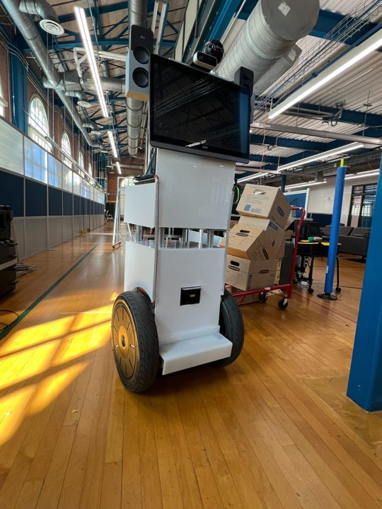

Robotics & Embedded Electronics Engineer, Texas RoboticsJan 2024–Present

- Built the navigation and perception stack for a fleet of four Segway robots running 24/7 in dynamic environments.
- Developed learning-based multi-agent collision avoidance in ROS2 Nav2, cutting navigation delays by 60%.
- Integrated a UR5 arm, LiDAR, and depth cameras on a mobile base for autonomous pick-and-place (MoveIt, ROS2).
- Leading an LLM-powered autonomous tour guide robot.
Open source
utexas-bwi/segway_rmp_ros2
Native ROS2 C++ driver for Segway RMP 200/400 robots, built on my ROS2 port of the libsegwayrmp platform library. Publishes odometry, IMU, and status, and plugs straight into Nav2.
Forked by 4 developers · community PR adding TwistStamped support
Living-With-Robots-Lab/ROS2-WebComms
Lightweight WebSocket client–server framework for real-time robot-to-robot ROS2 topic sharing, with async I/O and automatic reconnection for fault-tolerant multi-robot communication.
Built for multi-robot fleet coordination